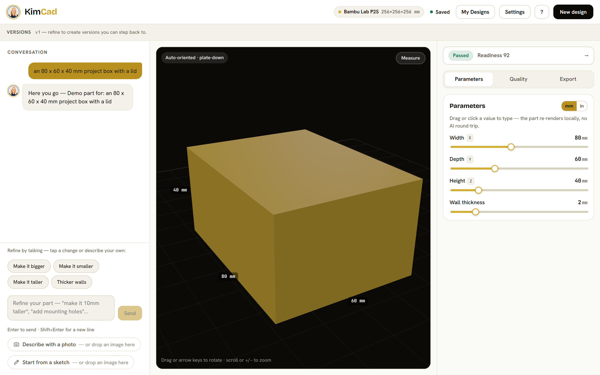
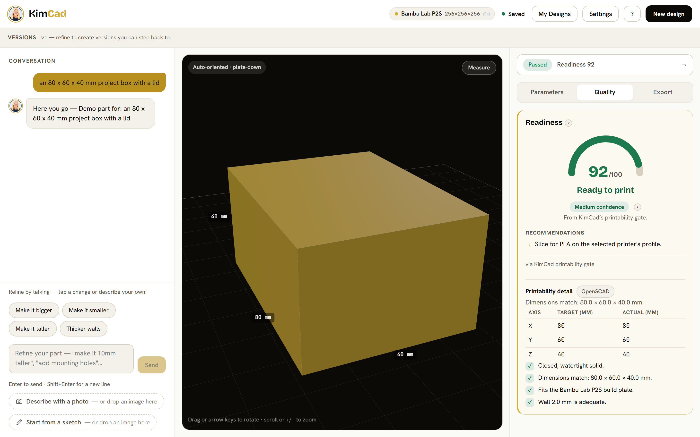
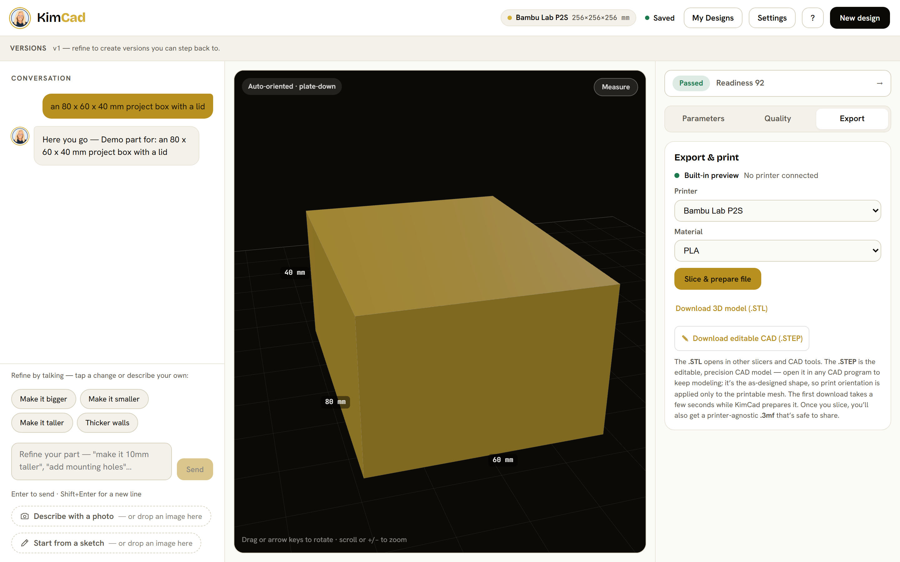
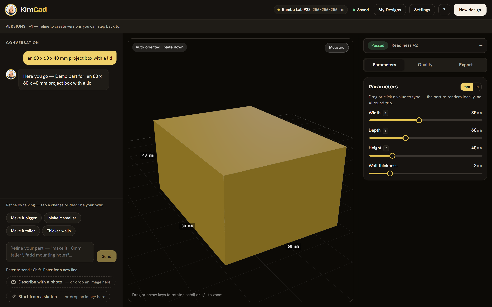
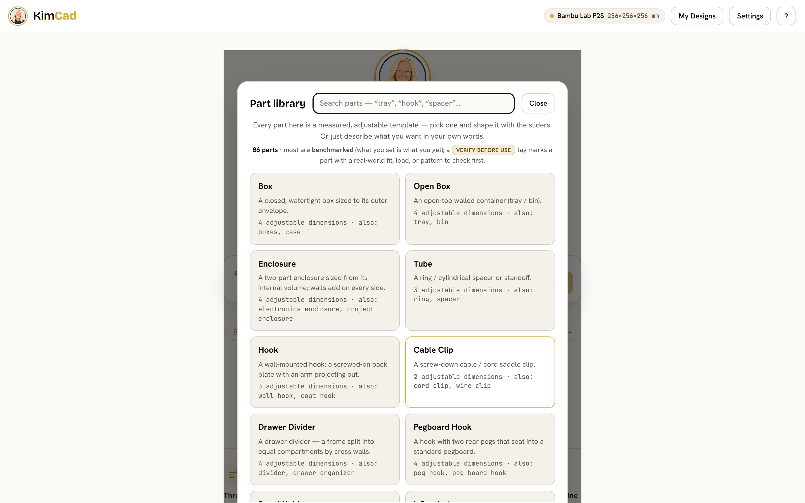
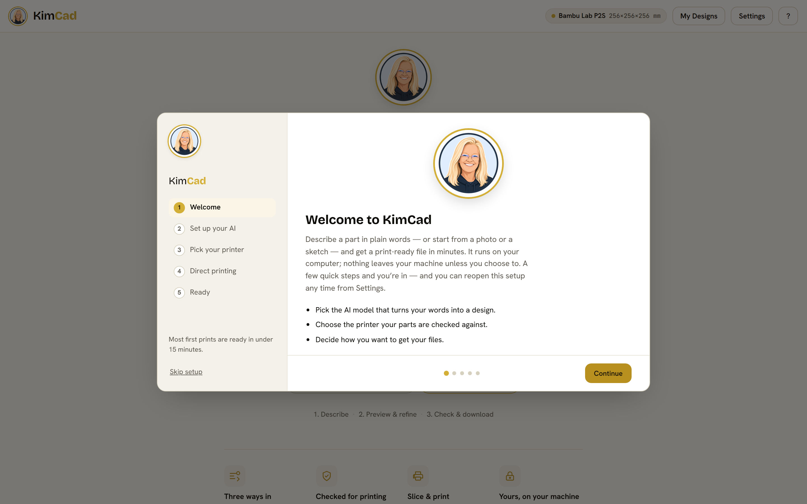

Describe a part.
Get a print-ready file.
KimCad turns plain words — or a photo, or a dimensioned sketch — into solid, parametric geometry, checks it against your printer and material, and hands you the file. The AI runs entirely on your own machine. No CAD skills. No account. No cloud.
Open-source · Apache-2.0 · Windows beta — unsigned installer, double-click to run

Three calm steps to a part you can actually print.
No terminal, no account, no CAD. Describe it, let Kim check it, download or send it to your printer.
01 Describe it
Type what you want, drop a photo, or start from a sketch. Kim asks at most one clarifying question, then builds real parametric geometry — adjustable with sliders, no AI round-trip.

02 Let KimCad check it
Every part is scored against your printer and material before you commit — a 0–100 readiness score, a plain verdict, the risks, and concrete recommendations. Nothing prints unchecked.

03 Print or export
Download STL, 3MF, or an editable STEP — or slice and send it straight to your printer. Always behind an explicit confirmation. KimCad never auto-starts a print.

Confidence you can see, before a gram of filament is spent.
The geometry comes from a parametric template engine — not a neural net — so the output is closed, watertight, and dimensionally meaningful by construction. Then the printability gate scores it.
- ✓A real 0–100 readiness score, with a ready / caution / not-ready verdict.
- ✓Risks ranked by severity, kept separate from concrete recommendations.
- ✓Confidence that blends the validator with your own local print history.
- ✓A part that fails the gate can never be sliced or sent — only downloaded to inspect.
86 measured part families. Browse them, or just describe one.
Brackets and hooks, enclosures and faceplates, gridfinity storage, fasteners and standoffs, knobs and adapters — a whole maker's catalogue. Each family is a precise, adjustable template: change a wall thickness or a hole diameter and it re-renders instantly.

Speaks your printer's language — six firmwares.
Pick your maker and KimCad adapts the connection to its firmware. Slice with the bundled engine, then send — over your own LAN, never the cloud.
Bambu LAN
P1S · X1C · A1 · A1 mini — the most-proven path.
Moonraker / Klipper
Creality K1, Voron, Neptune, and most Klipper machines.
OctoPrint
Anything fronted by an OctoPrint server.
PrusaLink
Prusa MK4 · MINI+ · XL.
RepRapFirmware / Duet
Duet-based machines over the network.
Marlin (serial)
Stock-Marlin printers over USB.
Every send is gated behind an explicit confirmation dialog. KimCad never auto-starts a print.
Private by default — nothing leaves your computer.
The AI runs locally through Ollama. Your prompts, your photos, your sketches, your designs — none of it is uploaded. There's no account and no API key to run KimCad. A cloud model is an off-by-default opt-in, with your own key, for hard prompts only.

This is a beta, and we won't pretend otherwise.
All eleven build stages are complete and gate-passed. The remaining work is real-hardware print validation — every send-to-printer connector is validated against a conformance model of the printer's real protocol, not yet against physical metal. If you have a printer, your report is the most valuable thing you can give back.
The installer is unsigned (no code-signing certificate yet), so Windows SmartScreen will warn Windows protected your PC — that's expected; click More info → Run anyway. Every release ships SHA256SUMS.txt and a release-manifest.json recording the exact source commit.
Bring your idea to the plate.
Download the Windows beta, double-click, and describe your first part. It runs on your machine, checks its own work, and keeps your ideas yours.